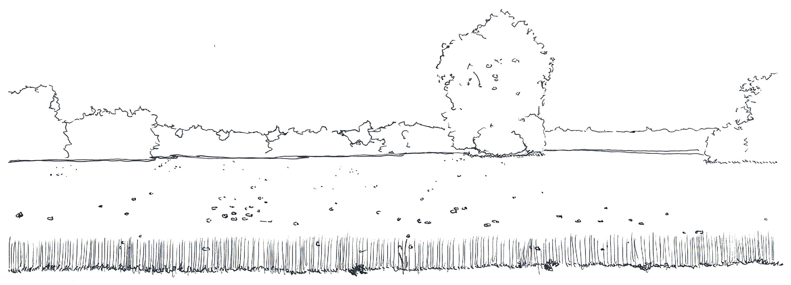

Le Champ du Platane, Paysagiste concepteur
Je me présente, Constantin GORIOUX : bricoleur, dessinateur, jardinier, songeur, imaginatif, Ingénieur Paysagiste… Paysagiste Concepteur !
Un jour, un petit bonhomme tout à fait extraordinaire me demandait :
S’il vous plaît... Dessine-moi un paysage !
Soucieux de satisfaire ce petit Prince... Les yeux fermés et les sens en alerte, les engrenages de l’imaginaire s’activent..
Ceux-ci me transportent, un dimanche en famille, sur le chemin de terre derrière la maison. Celui où les arbres forment une voûte végétale. Vous savez, ce petit chemin frais aux chaleurs d’été ; où même des orchidées nous font croire à des abeilles agglutinées alors que les pois de senteur illuminent l’ombre de leur couleur.
Continuons... Un, deux, puis troisième virage, les rayons du soleil nous annoncent la plaine.
Une haie, un trait blanc sur une feuille verte : notre chemin, les bruits de la poussette du petit dernier dans les cailloux.
Nous nous arrêtons.
Un champ, vert foncé, tacheté du rouge vif de centaines de coquelicots. Il est courbé par le canal qui le borde et délimité par le cadre vert des haies de frênes, érables et aubépines fleuries.
Là-bas, au milieu de ce champ, de sa silhouette majestueuse et imposante, le Platane s’érige en roi de sa campagne. Voilà donc, Le champ du Platane.
...Mes mains s’activent. Un croquis : un trait pour la courbe du canal, un pour les haies, d’autres pour le blé et de petits ronds pour les coquelicots. Et enfin, la silhouette du platane.
Il pencha la tête vers le dessin :
Pourquoi est-ce que ton arbre dans un champ est-il paysage ?
Vous ne le savez peut-être pas, mais à la base la peinture a initié la notion de paysage. Or, de ce lieu je peux vous en parler comme d’un tableau. Voyez par vous-même :
- Il y a cette courbe : la ligne d’horizon, qui rappelle le premier coup de crayon que le paysagiste pose sur sa feuille blanche.
- Il y a cet arbre isolé, point d’appel qui attire nos regards et qui invite à nous arrêter un instant.
- Il y a ces haies qui structurent : le premier et l’arrière-plan. Elles nous permettent de comprendre ce qu’est la perspective, l’effet de profondeur.
Mais j’y pense ! Peut-être que tout simplement, ce champ nous évoque les paysages ruraux et par opposition les paysages urbains ! Qu’en pensez-vous ?
Le voyant, songeur et marqué de son sourire malicieux, je le laisse réfléchir et reprends.
Mais vous savez, rien que l’expression de son nom, « Le Champ du Platane », m’évoque le paysage :
En effet, il me rappelle une notion indispensable pour parler de Paysage : le champ de vision de l’observateur sur un espace.
Il me rappelle également le champ des possibles qu’offre la conception d’un paysage.
Il me rappelle la sonorité des paysages, leur musique, leur chant. Fermez les yeux et écoutez le bruit des feuillages dans le vent, l’oiseau perché dans l’érable au fond du jardin et le mouvement de l’eau qui court sur les rochers chauffés par le soleil.
Il me rappelle aussi une notion bien plus terre à terre du paysage : sa réalisation. Pensez-y quand vous placerez une planche sur son champ lors de la construction de vos carrés de potager surélevé.
Il me rappelle encore la notion de paysages typiques : les places sud plantées de Platanes, le canal du midi et les allées royales bordés de Platanes.
Enfin, il me rappelle la notion de plans et de photos aériennes : le dégradé de vert de l’écorce des platanes m’évoque le mitage des territoires.
Voilà pourquoi je vous ai dessiné ce paysage...
...Et voilà pourquoi aujourd’hui « Le Champ du Platane » !